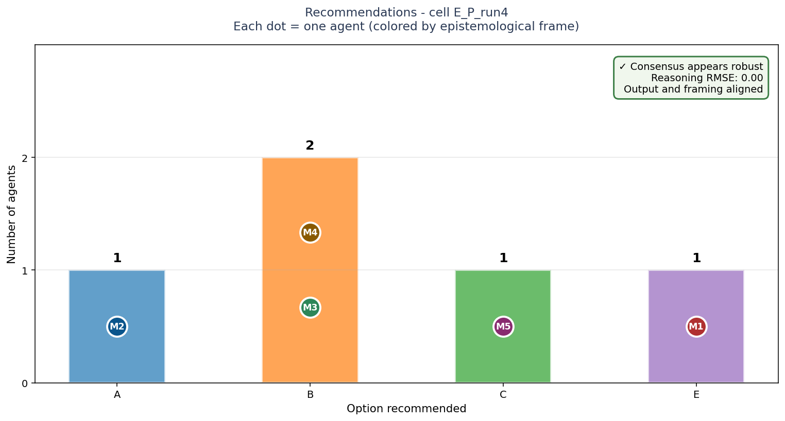
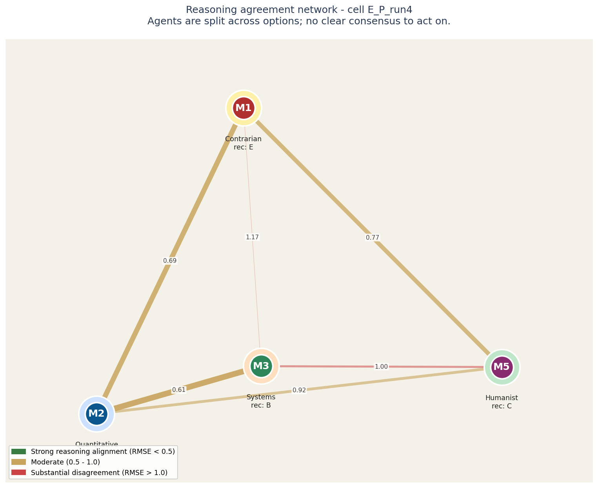
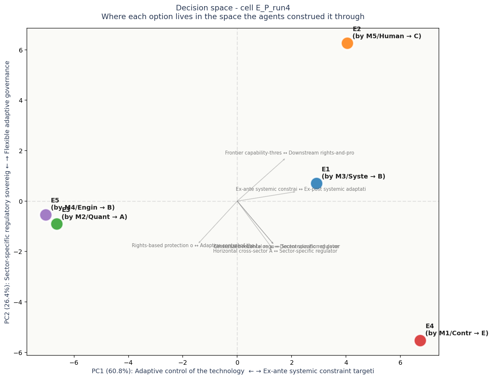

# Task E: AI safety governance framework ## Context You are advising a coalition of 8 mid-sized democracies (combined GDP ~$15T, ~600M people) on adopting a unified governance framework for frontier AI systems. The coalition's negotiation deadline is 18 months. The political reality: bigger powers (US, EU, China) are setting their own frameworks unilaterally; the coalition wants a coordinated position that (a) protects citizens, (b) preserves domestic AI competitiveness, (c) maintains influence in global norm-setting, and (d) is implementable within the 18-month window. Five candidate governance approaches are on the table. **Choose one as the coalition's primary framework.** The choice will define which international standards bodies the coalition pushes through, what domestic legislation gets drafted, and where research funding flows. ## Options **Option A: Capability-thresholds licensing** Treat frontier models like nuclear materials. Above a defined compute threshold (e.g., 10^26 FLOPs), training requires a coalition-issued license; deployment requires capability evaluations; export restrictions on weights. Outcomes: precedent-setting; concentrates power oversight; aligns with hawkish US views. Risks: definitional drift as capability scales; lock-in to current frontier labs; chills open-source ecosystem; tech-protectionism backlash. **Option B: Outcomes-based liability** No pre-deployment licensing. Instead, strong post-deployment liability: AI providers liable for downstream harms with reverse burden of proof (provider must show due diligence). Mandatory insurance pool. Outcomes: market-friendly; preserves innovation; well-suited to common-law traditions. Risks: harms must materialize before redress; small actors can't afford insurance; cross-border harm attribution near-impossible; favors well-capitalized incumbents. **Option C: Rights-and-process-based** Codify user rights (transparency, contestability, explanation, opt-out) and require process compliance (impact assessments, public consultations for high-risk deployments). EU AI Act-compatible. Outcomes: protects individuals concretely; aligns with existing rights frameworks; politically durable. Risks: compliance theater (paperwork without substance); slows deployment significantly; foreign providers may exit market; doesn't address catastrophic/systemic risks. **Option D: Distributed open-science governance** Commit to open weights and open evaluation for systems below a defined "civilizational risk" threshold; mandatory pre-publication red-teaming via international research consortium. Above the threshold: shared moratorium until consensus on safe deployment. Outcomes: democratizes AI capability; aligns with academic norms; reduces information asymmetry. Risks: open weights = irreversible proliferation; consortium consensus is slow and capturable; "civilizational risk" undefined. **Option E: Sector-specific regulatory sovereignty** No general AI law. Instead: existing sectoral regulators (health, finance, transport, education, defense, justice) extend their mandates to cover AI within their domains. Coalition coordinates regulatory exchange and mutual recognition. Outcomes: builds on existing expertise; pragmatic; avoids meta-regulator capture; flexibility per domain. Risks: gaps between sectors; cross-sector AI (general-purpose models) falls between cracks; inconsistent treatment of equivalent risks; slow to address novel applications. ## What to provide Choose one as the coalition's primary framework. Provide 200-400 words of reasoning. Advocate; do not enumerate trade-offs of all five. Address: why this framework, why not the most compelling alternative, what would have to be true in 5 years for you to consider this choice a mistake.

Bars show how many agents recommended each option. Each bar is annotated with the individual agents who supported it, color-coded by epistemological frame.
The key signal is in the corner box. A check-mark means the panel's agreement runs deep - they share both the recommendation and the reasoning. A warning means they share the recommendation but not the underlying logic; this is the configuration most likely to produce execution surprises.
| Voice | Recommends | Why (in their words) |
|---|---|---|
| M1 (C) | E | ## Recommendation: Option E — Sector-specific regulatory sovereignty |
| M2 (Q) | A | Recommend **Option A: capability-threshold licensing** as the coalition’s primary framework. |
| M3 (S) | B | To govern a complex adaptive system undergoing exponential change, regulations must be dynamic, not static. The coalition must adopt **Option B (Outcomes-based liability)**. |
| M4 (E) | B | **Recommendation: Option A — Capability-Thresholds Licensing** |
| M5 (H) | C | I recommend **Option C: a rights-and-process-based framework** as the coalition’s primary position. This choice begins from the right question: *who is affected and how?* The answer is six hundred million ordinary people confronting algorithmic scoring in welfare offices, diagnos |

Each circle is an LLM agent in the panel. Position on the canvas reflects how similarly the agent rated all the elements: agents close together reason about the decision in similar ways, agents far apart reason differently.
The lines between circles encode reasoning agreement. Green-and-thick = the two agents reason almost identically. Yellow-medium = they differ on framing. Red-thin = substantial disagreement at the reasoning level even if their final recommendations might match.
Inside each circle is the agent label and its epistemological frame (Quantitative, Systems, Engineering, Humanist, Contrarian). The halo color around each circle indicates which option that agent recommended.
For this case: Agents are split across options; no clear consensus to act on.
Operator note: halos show different recommendations - the panel is split. The network helps you see WHICH agents reason alike and which don't, which is more useful than counting votes.

Each colored dot is one of the 5 options under consideration, positioned in a 2D space derived from how all the agents rated all the constructs. Options close together were seen similarly by the panel; options far apart were seen as fundamentally different kinds of choices.
The axes are interpretable. The horizontal axis (PC1) is dominated by Adaptive control of the technology frontier on one end and Ex-ante systemic constraint targeting concentrated on the other - this is the single biggest dimension along which the options differ. The vertical axis (PC2) is dominated by Sector-specific regulatory sovereignty vs Flexible adaptive governance.
Gray arrows show which construct dimensions point in which direction. If two options are far apart along one arrow, the construct that arrow represents is what makes them feel different. If an arrow is short, that construct does not strongly differentiate the options.
Each label shows: option ID, the agent who authored that response, their epistemological frame, and the option they recommended.
No obvious blind spots detected. The voices collectively explored the dimensions of this decision.
Concerns each voice flagged in passing - worth surfacing before action: